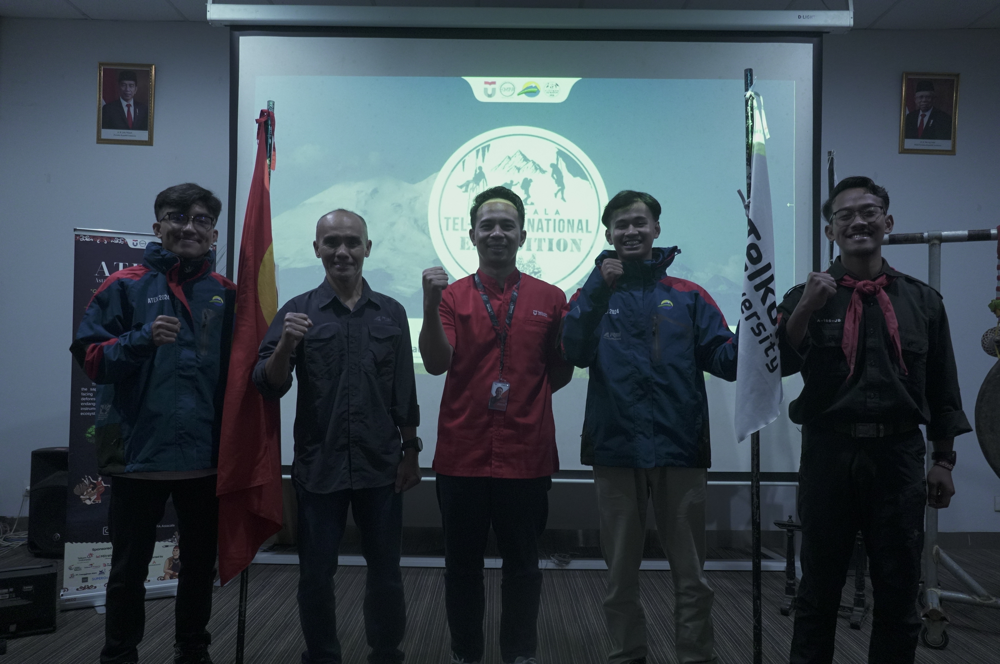

Memimpin tim dalam ekspedisi pendakian Gunung Elbrus, Rusia
ATEX (ASTACALA Tel-U International Expedition) 2024 merupakan ekspedisi pendakian Gunung Elbrus, Rusia. Sebagai ketua ekspedisi, saya bertanggung jawab dalam perencanaan strategis, koordinasi tim, serta pengambilan keputusan kritis untuk memastikan ekspedisi berjalan lancar dan aman. Keberhasilan ini menjadi pencapaian penting yang membawa nama baik ASTACALA dan Telkom University ke kancah internasional.
Mengembangkan strategi, menyemangati tim, dan menyelesaikan masalah kompleks secara lapangan.
Berhasil memimpin ekspedisi ke salah satu puncak tertinggi di Eropa.
2 anggota tim mencapai puncak Elbrus dengan selamat.
Menghasilkan dokumentasi video dan konten publikasi ekspedisi.
Dokumentasi ekspedisi dapat dilihat di kanal berikut:
Lihat di Instagram Tonton di YouTube